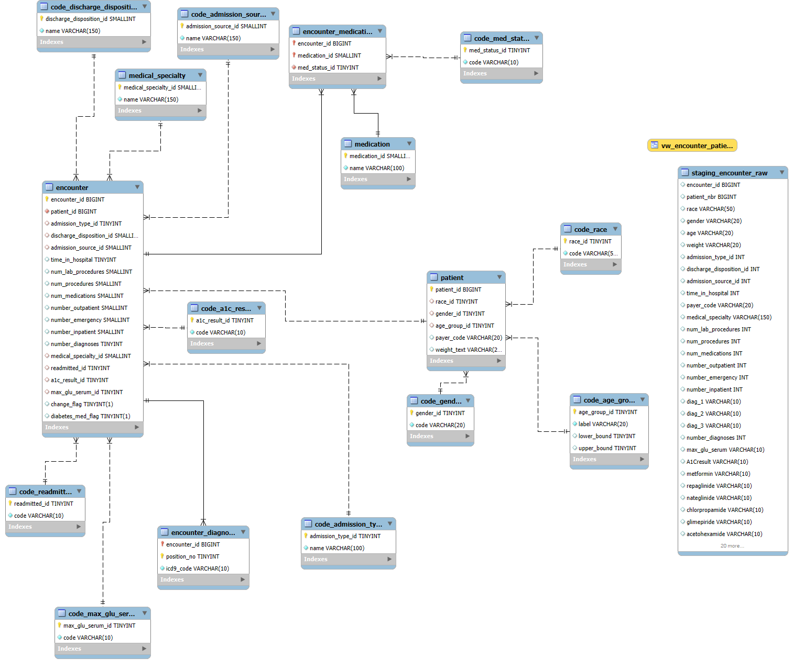

flowchart TD
A["CSV (Kaggle)"] --> B["MySQL: staging_encounter_raw"]
B --> C["MySQL: normalized tables"]
C --> D["SQL view: vw_encounter_patient"]
D --> E["R: cleaning & fairness"]
E --> F["Power BI: dashboard"]
E --> G["Exports (CSV / MySQL tables)"]
Hospital Readmission Analytics (SQL + R + Power BI)
Overview
Built a full readmission analytics pipeline using SQL, R, and Power BI on 100K+ hospital encounters. Designed a normalized SQL schema, engineered an analysis view, and ran statistical modeling in R to identify what drives 30-day readmissions. Found an overall readmission rate of ~11%, modest subgroup gaps (~2.7%), and clear clinical drivers: length of stay, number of diagnoses, and medication count. Delivered a 3-page Power BI report showing equity metrics, risk patterns, and clinical complexity signals.
What I Did
- Defined the business objective, metric targets, and analysis scope.
- Built and validated the data, modeling, and reporting workflow.
- Packaged outputs for stakeholder interpretation and decision support.
Results/Impact
Delivered an analysis workflow with decision-ready outputs and reusable artifacts.
Tech Stack
- Data Analysis, Database Management, Problem Solving, Programming, Project Management, UI/UX Design
Deliverables
Project Notes
Description: Built a full readmission analytics pipeline using SQL, R, and Power BI on 100K+ hospital encounters. Designed a normalized SQL schema, engineered an analysis view, and ran statistical modeling in R to identify what drives 30-day readmissions. Found an overall readmission rate of ~11%, modest subgroup gaps (~2.7%), and clear clinical drivers: length of stay, number of diagnoses, and medication count. Delivered a 3-page Power BI report showing equity metrics, risk patterns, and clinical complexity signals. Skills Demonstrated: Data Analysis, Database Management, Problem Solving, Programming, Project Management, UI/UX Design Project Status: Completed Completion Date: September 16, 2025
Executive Summary
I��ve wanted to find ways to use my skills to contribute to healthcare. This made me think even more about how data and analytics could support doctors, patients, and families.
So, I picked up the Diabetes 130-US Hospitals dataset (about 100,000 encounters from 1999��2008) and built a full pipeline using SQL, R, and Power BI. My goal was to take messy data and turn it into something clear and useful: a story about which patients are most likely to be readmitted within 30 days, and why.
What I found:
- About 11% of patients are readmitted within 30 days.
- There��s a small but real 2.7% gap between the lowest and highest racial subgroups.
- The biggest drivers of risk are number of diagnoses, how many medications are prescribed, and how long the patient stays in the hospital.
This was both a technical challenge and a personal project. It was proof that I can design an end-to-end workflow while keeping the focus on people represented in the dataset.
Data & Tools
- Dataset: Diabetes 130-US Hospitals (~100k encounters)
- Tools: MySQL, R (Quarto), Power BI
- Exports: Cleaned CSVs and visuals for BI
Methods
SQL (data foundation)
I built a normalized schema in MySQL to handle patients, encounters, diagnoses, and medications. A staging table pulled in the raw CSV, then I cleaned and mapped the categories (race, gender, readmission flags, A1C, glucose levels). From there I created a single analysis view that was easy to query later in R and Power BI.

SQL Code & Comments
-- ========================================================== -- Hospital Readmission Database (Diabetes 130-US Hospitals) -- Author: Markuss Saule -- ========================================================== -- Purpose: -- Normalized schema + pipeline for loading and analyzing -- ~100k encounters from the Diabetes 130-US Hospitals dataset. -- Steps: -- 0) Create database -- 1) Reference (code) tables -- 2) Core entity tables -- 3) Staging table (mirror CSV) -- 4) ETL inserts into normalized schema -- 5) Basic validation queries -- 6) Analysis view -- ========================================================== -- 0) Create database CREATE DATABASE IF NOT EXISTS diabetes_db CHARACTER SET utf8mb4 COLLATE utf8mb4_0900_ai_ci; USE diabetes_db; -- ========================================================== -- 1) Reference (code) tables -- ========================================================== CREATE TABLE code_race ( race_id TINYINT UNSIGNED PRIMARY KEY AUTO_INCREMENT, code VARCHAR(50) NOT NULL UNIQUE ); CREATE TABLE code_gender ( gender_id TINYINT UNSIGNED PRIMARY KEY AUTO_INCREMENT, code VARCHAR(20) NOT NULL UNIQUE ); CREATE TABLE code_age_group ( age_group_id TINYINT UNSIGNED PRIMARY KEY AUTO_INCREMENT, label VARCHAR(20) NOT NULL UNIQUE, lower_bound TINYINT NULL, upper_bound TINYINT NULL ); CREATE TABLE code_admission_type ( admission_type_id TINYINT UNSIGNED PRIMARY KEY, name VARCHAR(100) NOT NULL UNIQUE ); CREATE TABLE code_discharge_disposition ( discharge_disposition_id SMALLINT UNSIGNED PRIMARY KEY, name VARCHAR(150) NOT NULL UNIQUE ); CREATE TABLE code_admission_source ( admission_source_id SMALLINT UNSIGNED PRIMARY KEY, name VARCHAR(150) NOT NULL UNIQUE ); CREATE TABLE code_readmitted ( readmitted_id TINYINT UNSIGNED PRIMARY KEY AUTO_INCREMENT, code VARCHAR(10) NOT NULL UNIQUE -- '<30', '>30', 'NO' ); CREATE TABLE code_a1c_result ( a1c_result_id TINYINT UNSIGNED PRIMARY KEY AUTO_INCREMENT, code VARCHAR(10) NOT NULL UNIQUE ); CREATE TABLE code_max_glu_serum ( max_glu_serum_id TINYINT UNSIGNED PRIMARY KEY AUTO_INCREMENT, code VARCHAR(10) NOT NULL UNIQUE ); CREATE TABLE medical_specialty ( medical_specialty_id SMALLINT UNSIGNED PRIMARY KEY AUTO_INCREMENT, name VARCHAR(150) NOT NULL UNIQUE ); CREATE TABLE medication ( medication_id SMALLINT UNSIGNED PRIMARY KEY AUTO_INCREMENT, name VARCHAR(100) NOT NULL UNIQUE ); CREATE TABLE code_med_status ( med_status_id TINYINT UNSIGNED PRIMARY KEY AUTO_INCREMENT, code VARCHAR(10) NOT NULL UNIQUE -- 'No', 'Steady', 'Up', 'Down' ); -- ========================================================== -- 2) Core entity tables -- ========================================================== CREATE TABLE patient ( patient_id BIGINT PRIMARY KEY, -- from CSV patient_nbr race_id TINYINT UNSIGNED NULL, gender_id TINYINT UNSIGNED NULL, age_group_id TINYINT UNSIGNED NULL, payer_code VARCHAR(20) NULL, weight_text VARCHAR(20) NULL, CONSTRAINT fk_patient_race FOREIGN KEY (race_id) REFERENCES code_race(race_id), CONSTRAINT fk_patient_gender FOREIGN KEY (gender_id) REFERENCES code_gender(gender_id), CONSTRAINT fk_patient_agegrp FOREIGN KEY (age_group_id) REFERENCES code_age_group(age_group_id) ); CREATE TABLE encounter ( encounter_id BIGINT PRIMARY KEY, -- from CSV patient_id BIGINT NOT NULL, admission_type_id TINYINT UNSIGNED NULL, discharge_disposition_id SMALLINT UNSIGNED NULL, admission_source_id SMALLINT UNSIGNED NULL, time_in_hospital TINYINT UNSIGNED NULL, num_lab_procedures SMALLINT UNSIGNED NULL, num_procedures SMALLINT UNSIGNED NULL, num_medications SMALLINT UNSIGNED NULL, number_outpatient SMALLINT UNSIGNED NULL, number_emergency SMALLINT UNSIGNED NULL, number_inpatient SMALLINT UNSIGNED NULL, number_diagnoses TINYINT UNSIGNED NULL, medical_specialty_id SMALLINT UNSIGNED NULL, readmitted_id TINYINT UNSIGNED NULL, a1c_result_id TINYINT UNSIGNED NULL, max_glu_serum_id TINYINT UNSIGNED NULL, change_flag BOOLEAN NULL, -- 'Ch'->true, 'No'->false diabetes_med_flag BOOLEAN NULL, -- 'Yes'/'No' CONSTRAINT fk_enc_patient FOREIGN KEY (patient_id) REFERENCES patient(patient_id), CONSTRAINT fk_enc_admtype FOREIGN KEY (admission_type_id) REFERENCES code_admission_type(admission_type_id), CONSTRAINT fk_enc_disposition FOREIGN KEY (discharge_disposition_id) REFERENCES code_discharge_disposition(discharge_disposition_id), CONSTRAINT fk_enc_admsource FOREIGN KEY (admission_source_id) REFERENCES code_admission_source(admission_source_id), CONSTRAINT fk_enc_med_spec FOREIGN KEY (medical_specialty_id) REFERENCES medical_specialty(medical_specialty_id), CONSTRAINT fk_enc_readmitted FOREIGN KEY (readmitted_id) REFERENCES code_readmitted(readmitted_id), CONSTRAINT fk_enc_a1c FOREIGN KEY (a1c_result_id) REFERENCES code_a1c_result(a1c_result_id), CONSTRAINT fk_enc_maxglu FOREIGN KEY (max_glu_serum_id) REFERENCES code_max_glu_serum(max_glu_serum_id) ); CREATE TABLE encounter_diagnosis ( encounter_id BIGINT NOT NULL, position_no TINYINT UNSIGNED NOT NULL, -- 1,2,3 icd9_code VARCHAR(10) NOT NULL, PRIMARY KEY (encounter_id, position_no), CONSTRAINT fk_ed_enc FOREIGN KEY (encounter_id) REFERENCES encounter(encounter_id) ); CREATE TABLE encounter_medication ( encounter_id BIGINT NOT NULL, medication_id SMALLINT UNSIGNED NOT NULL, med_status_id TINYINT UNSIGNED NOT NULL, PRIMARY KEY (encounter_id, medication_id), CONSTRAINT fk_em_enc FOREIGN KEY (encounter_id) REFERENCES encounter(encounter_id), CONSTRAINT fk_em_med FOREIGN KEY (medication_id) REFERENCES medication(medication_id), CONSTRAINT fk_em_status FOREIGN KEY (med_status_id) REFERENCES code_med_status(med_status_id) ); -- ========================================================== -- 3) Staging table (mirror CSV for import) -- ========================================================== DROP TABLE IF EXISTS staging_encounter_raw; CREATE TABLE staging_encounter_raw ( encounter_id BIGINT, patient_nbr BIGINT, race VARCHAR(50), gender VARCHAR(20), age VARCHAR(20), weight VARCHAR(20), admission_type_id INT, discharge_disposition_id INT, admission_source_id INT, time_in_hospital INT, payer_code VARCHAR(20), medical_specialty VARCHAR(150), num_lab_procedures INT, num_procedures INT, num_medications INT, number_outpatient INT, number_emergency INT, number_inpatient INT, diag_1 VARCHAR(10), diag_2 VARCHAR(10), diag_3 VARCHAR(10), number_diagnoses INT, max_glu_serum VARCHAR(10), A1Cresult VARCHAR(10), metformin VARCHAR(10), repaglinide VARCHAR(10), nateglinide VARCHAR(10), chlorpropamide VARCHAR(10), glimepiride VARCHAR(10), acetohexamide VARCHAR(10), glipizide VARCHAR(10), glyburide VARCHAR(10), tolbutamide VARCHAR(10), pioglitazone VARCHAR(10), rosiglitazone VARCHAR(10), acarbose VARCHAR(10), miglitol VARCHAR(10), troglitazone VARCHAR(10), tolazamide VARCHAR(10), examide VARCHAR(10), citoglipton VARCHAR(10), insulin VARCHAR(10), glyburide_metformin VARCHAR(10), glipizide_metformin VARCHAR(10), glimepiride_pioglitazone VARCHAR(10), metformin_rosiglitazone VARCHAR(10), metformin_pioglitazone VARCHAR(10), change_raw VARCHAR(10), diabetesMed VARCHAR(10), readmitted VARCHAR(10) ); -- ========================================================== -- 4) ETL Inserts -- ========================================================== -- Populate reference/code tables INSERT IGNORE INTO code_race (code) SELECT DISTINCT race FROM staging_encounter_raw; INSERT IGNORE INTO code_gender (code) SELECT DISTINCT gender FROM staging_encounter_raw; INSERT IGNORE INTO code_age_group (label) SELECT DISTINCT age FROM staging_encounter_raw; INSERT IGNORE INTO code_readmitted (code) SELECT DISTINCT readmitted FROM staging_encounter_raw; INSERT IGNORE INTO code_a1c_result (code) SELECT DISTINCT A1Cresult FROM staging_encounter_raw; INSERT IGNORE INTO code_max_glu_serum (code) SELECT DISTINCT max_glu_serum FROM staging_encounter_raw; INSERT IGNORE INTO medical_specialty (name) SELECT DISTINCT medical_specialty FROM staging_encounter_raw WHERE medical_specialty <> '?'; INSERT IGNORE INTO code_admission_type (admission_type_id, name) SELECT DISTINCT admission_type_id, CONCAT('Type ', admission_type_id) FROM staging_encounter_raw WHERE admission_type_id IS NOT NULL; INSERT IGNORE INTO code_discharge_disposition (discharge_disposition_id, name) SELECT DISTINCT discharge_disposition_id, CONCAT('Disposition ', discharge_disposition_id) FROM staging_encounter_raw WHERE discharge_disposition_id IS NOT NULL; INSERT IGNORE INTO code_admission_source (admission_source_id, name) SELECT DISTINCT admission_source_id, CONCAT('Source ', admission_source_id) FROM staging_encounter_raw WHERE admission_source_id IS NOT NULL; -- Patients INSERT INTO patient (patient_id, race_id, gender_id, age_group_id, payer_code, weight_text) SELECT s.patient_nbr, r.race_id, g.gender_id, a.age_group_id, NULLIF(s.payer_code, '?'), NULLIF(s.weight, '?') FROM ( SELECT s1.* FROM staging_encounter_raw s1 JOIN ( SELECT patient_nbr, MIN(encounter_id) AS min_enc FROM staging_encounter_raw GROUP BY patient_nbr ) t ON s1.patient_nbr = t.patient_nbr AND s1.encounter_id = t.min_enc ) s LEFT JOIN code_race r ON r.code = s.race LEFT JOIN code_gender g ON g.code = s.gender LEFT JOIN code_age_group a ON a.label = s.age; -- Encounters INSERT INTO encounter ( encounter_id, patient_id, admission_type_id, discharge_disposition_id, admission_source_id, time_in_hospital, num_lab_procedures, num_procedures, num_medications, number_outpatient, number_emergency, number_inpatient, number_diagnoses, medical_specialty_id, readmitted_id, a1c_result_id, max_glu_serum_id, change_flag, diabetes_med_flag ) SELECT s.encounter_id, s.patient_nbr, s.admission_type_id, s.discharge_disposition_id, s.admission_source_id, s.time_in_hospital, s.num_lab_procedures, s.num_procedures, s.num_medications, s.number_outpatient, s.number_emergency, s.number_inpatient, s.number_diagnoses, ms.medical_specialty_id, cr.readmitted_id, ca.a1c_result_id, cg.max_glu_serum_id, CASE WHEN s.change_raw = 'Ch' THEN TRUE WHEN s.change_raw = 'No' THEN FALSE ELSE NULL END, CASE WHEN s.diabetesMed = 'Yes' THEN TRUE WHEN s.diabetesMed = 'No' THEN FALSE ELSE NULL END FROM staging_encounter_raw s LEFT JOIN medical_specialty ms ON [ms.name](http://ms.name/) = s.medical_specialty LEFT JOIN code_readmitted cr ON cr.code = s.readmitted LEFT JOIN code_a1c_result ca ON ca.code = s.A1Cresult LEFT JOIN code_max_glu_serum cg ON cg.code = s.max_glu_serum; -- ========================================================== -- 5) Validation queries -- ========================================================== SELECT COUNT(*) AS n_patients FROM patient; SELECT COUNT(*) AS n_encounters FROM encounter; SELECT cr.code AS readmitted, COUNT(*) AS n FROM encounter e JOIN code_readmitted cr ON cr.readmitted_id = e.readmitted_id GROUP BY cr.code; -- ========================================================== -- 6) Analysis view -- ========================================================== CREATE OR REPLACE VIEW vw_encounter_patient AS SELECT e.encounter_id, p.patient_id, r.code AS race, g.code AS gender, a.label AS age_group, e.time_in_hospital, e.num_medications, e.number_diagnoses, cr.code AS readmitted FROM encounter e JOIN patient p ON p.patient_id = e.patient_id LEFT JOIN code_race r ON r.race_id = p.race_id LEFT JOIN code_gender g ON g.gender_id = p.gender_id LEFT JOIN code_age_group a ON a.age_group_id = p.age_group_id LEFT JOIN code_readmitted cr ON cr.readmitted_id = e.readmitted_id;
R (analysis & reporting)
In R, I cleaned the fields, built a binary readmission flag, and ran exploratory analysis. I also built a logistic regression model to test what factors increased risk of readmission. Finally, I exported cleaned tables for Power BI.
Hospital Readmission Equity Report.pdf
R Code & Comments
``` r — title: “Hospital Readmission Equity Report” author: “Markuss Saule” date: “9/15/2025” format: html: theme: cosmo toc: true toc-depth: 3 number-sections: true code-copy: true df-print: paged execute: echo: false warning: false message: false fig-cap-location: bottom code-fold: show jupyter: false —
# Packages required <- c( "DBI","RMariaDB","dplyr","tidyr","forcats","ggplot2", "broom","scales","stringr","readr","knitr","kableExtra" ) to_install <- setdiff(required, rownames(installed.packages())) if (length(to_install)) install.packages(to_install, quiet = TRUE) invisible(lapply(required, library, character.only = TRUE)) # Utility theme theme_set(theme_minimal(base_size = 13))con <- dbConnect( RMariaDB::MariaDB(), user = "root", password = "x", dbname = "diabetes_db", host = "127.0.0.1", port = 3306 ) # Pull data and clean immediately so summary stats exist for Executive Summary df <- dbGetQuery(con, "SELECT * FROM vw_encounter_patient;") df_clean <- df %>% mutate( race = na_if(race, "Unknown"), race = na_if(race, "?"), gender = ifelse(gender %in% c("Unknown/Invalid","?"), NA, gender), readmit_flag = ifelse(readmitted == "<30", 1, 0), age_mid = dplyr::case_when( str_detect(age_group, "\\[\\d+-\\d+\\)") ~ { lo <- as.numeric(str_extract(age_group, "(?<=\\[)\\d+")) hi <- as.numeric(str_extract(age_group, "(?<=-)\\d+(?=\\))")) (lo + hi) / 2 }, str_detect(age_group, "\\[\\d+\\+\\)") ~ as.numeric(str_extract(age_group, "\\d+")), TRUE ~ NA_real_ ) ) # Precompute metrics overall_rate_text <- scales::percent(mean(df_clean$readmit_flag, na.rm = TRUE)) subgroup <- df_clean %>% group_by(race) %>% summarise(rate = mean(readmit_flag, na.rm = TRUE), .groups="drop") highest_subgroup_text <- paste0(subgroup$race[which.max(subgroup$rate)], " �� ", scales::percent(max(subgroup$rate, na.rm = TRUE))) gap_text <- scales::percent(max(subgroup$rate,na.rm=TRUE) - min(subgroup$rate,na.rm=TRUE))# Executive Summary
This analysis explores 30-day readmission patterns using the public Diabetes 130-US hospitals (1999��2008) dataset.
Key messages:
- The overall 30-day readmission rate is about 11%, consistent with prior analyses of this dataset.
- Race subgroup differences are modest (roughly 9��12%), with overlapping confidence intervals, suggesting no strong racial disparities.
- Gender shows almost no difference in readmission.
- The strongest predictors of readmission are clinical complexity: more diagnoses, longer hospital stays, and greater medication use.
Interpretation note: This dataset is dated and illustrative; findings highlight workflow and methodology, not clinical advice.
This analysis explores 30-day readmission patterns using the public Diabetes 130-US hospitals (1999��2008) dataset, focusing on equity across demographic subgroups and interpretable drivers of risk.
- Overall 30-day readmission rate:
r overall_rate_text
- Demographics not significant: Race and gender coefficients are near 1 with overlapping CIs.
- Clinical complexity matters: Longer stays, more diagnoses, and higher medication counts increase odds of readmission.
- Highest subgroup rate (race):
r highest_subgroup_text
- Gap vs lowest subgroup:
r gap_text
- Key signals: time in hospital, number of diagnoses, and medication intensity show monotonic associations with readmission.
Interpretation note: This is an educational analysis on a public dataset; results are illustrative, not clinical guidance.
# Data & Methods
We implement a pragmatic analytics pipeline similar to what health systems use:
**Outcome**: `readmitted` recoded as **`readmit_flag = 1`** if `"<30"`, else **0**.
**Equity**: subgroup rates and 95% CIs via normal approximation.
**Model**: logistic regression (simple, interpretable).
# Exploratory Overview
```{.text}
n_encounters <- nrow(df_clean)
overall_rate <- mean(df_clean$readmit_flag, na.rm=TRUE)
t_overview <- tibble(
Metric = c("Encounters", "Overall 30-day readmission rate"),
Value = c(scales::comma(n_encounters), scales::percent(overall_rate))
)
knitr::kable(t_overview, caption = "Overall snapshot") %>%
kableExtra::kable_styling(full_width = FALSE)
```
# Readmission by Race (Equity Perspective)
```{.text}
subgroup <- df_clean %>%
group_by(race) %>%
summarise(
n = dplyr::n(),
rate = mean(readmit_flag, na.rm = TRUE),
se = sqrt(rate * (1 - rate) / n),
lcl = pmax(0, rate - 1.96 * se),
ucl = pmin(1, rate + 1.96 * se),
.groups = "drop"
) %>%
arrange(desc(rate))
knitr::kable(subgroup %>%
mutate(across(c(rate,lcl,ucl), scales::percent)),
caption = "Readmission by race with 95% CI") %>%
kableExtra::kable_styling(full_width = FALSE)
```
```{.text}
ggplot(subgroup, aes(x = reorder(race, rate), y = rate, fill = rate)) +
geom_col() +
geom_errorbar(aes(ymin = lcl, ymax = ucl), width = 0.2) +
geom_text(aes(label = scales::percent(rate, accuracy=0.1)), hjust=-0.1, size=3.5) +
coord_flip() +
scale_fill_viridis_c(option = 'plasma') +
scale_y_continuous(labels = scales::percent, expand = expansion(mult = c(0,0.1))) +
labs(
title = "30-day readmission rate by race",
x = NULL, y = "Rate (95% CI)"
)
```
# Readmission by Gender
```{.text}
by_gender <- df_clean %>%
filter(!is.na(gender)) %>%
group_by(gender) %>%
summarise(
n = n(),
rate = mean(readmit_flag, na.rm = TRUE),
.groups = "drop"
)
ggplot(by_gender, aes(x = gender, y = rate, fill = gender)) +
geom_col() +
geom_text(aes(label = scales::percent(rate, accuracy=0.1)), vjust=-0.5, size=3.5) +
scale_fill_viridis_d(option = 'plasma') +
scale_y_continuous(labels = scales::percent, expand = expansion(mult = c(0,0.1))) +
labs(title = "30-day readmission by gender", x = NULL, y = "Rate")
```
# Logistic Regression (Interpretable Model)
```{.text}
df_model <- df_clean %>%
filter(!is.na(race), !race %in% c("Unknown"),
!is.na(gender), !gender %in% c("Unknown")) %>%
transmute(
readmit_flag = readmit_flag,
race = fct_lump_n(factor(race), n = 5),
gender = factor(gender),
age_mid = age_mid,
time_in_hospital = time_in_hospital,
num_medications = num_medications,
number_diagnoses = number_diagnoses
) %>%
drop_na()
m <- glm(
readmit_flag ~ race + gender + age_mid + time_in_hospital +
num_medications + number_diagnoses,
data = df_model, family = binomial()
)
or <- broom::tidy(m, conf.int = TRUE, exponentiate = TRUE) %>%
mutate(term = str_replace_all(term, "race|gender", ""))
knitr::kable(or %>%
transmute(Feature = term,
`Odds Ratio` = round(estimate, 3),
`95% CI (low)` = round(conf.low, 3),
`95% CI (high)` = round(conf.high, 3)),
caption = "Logistic regression (odds ratios)") %>%
kableExtra::kable_styling(full_width = FALSE)
```
```{.text}
or %>%
filter(term != "(Intercept)") %>%
mutate(highlight = ifelse(term %in% c("time_in_hospital","num_medications","number_diagnoses"),
"Clinical","Other")) %>%
ggplot(aes(x = reorder(term, estimate), y = estimate, color = highlight)) +
geom_point(size=3) +
geom_errorbar(aes(ymin = conf.low, ymax = conf.high), width = 0.15) +
coord_flip() +
geom_hline(yintercept = 1, linetype = 2) +
scale_color_manual(values = c("Clinical" = "red", "Other" = "black")) +
scale_y_continuous(limits = c(0.8, 1.2), labels = scales::number_format(accuracy=0.01)) +
labs(title = "Feature effects (odds ratios with 95% CI)",
x = NULL, y = "Odds Ratio (Readmission <30 days)")
```
# Exports for Power BI
```{.text}
subgroup_out <- subgroup %>%
mutate(
rate = round(rate, 4),
lcl = round(lcl, 4),
ucl = round(ucl, 4)
)
enc_slim <- df_clean %>%
select(encounter_id, patient_id, race, gender, age_group,
time_in_hospital, num_medications, number_diagnoses,
readmitted, readmit_flag)
# Write files (for Power BI import)
dir.create("diabetes_project/data/processed", recursive = TRUE, showWarnings = FALSE)
readr::write_csv(subgroup_out, "diabetes_project/data/processed/subgroup_equity.csv")
readr::write_csv(enc_slim, "diabetes_project/data/processed/encounter_slim.csv")
# Show small previews in report
knitr::kable(head(subgroup_out, 10), caption = "Preview: Subgroup Equity Export") %>%
kableExtra::kable_styling(full_width = FALSE)
knitr::kable(head(enc_slim, 10), caption = "Preview: Encounter Slim Export") %>%
kableExtra::kable_styling(full_width = FALSE)
```
# Findings & Interpretation
- **Demographic predictors (race, gender) were not statistically significant** after adjustment; odds ratios were ~1 with overlapping 95% CIs.
- **Clinical complexity** (time in hospital, number of diagnoses, medication count) showed positive, statistically significant associations with readmission.
**Summary of results:**
- The **overall readmission rate is ~11%**.
- **Race subgroup rates range from ~9% to 12%**, with overlapping CIs �� differences are modest and not clearly significant.
- **Gender rates are nearly identical.**
- Logistic regression confirms that **clinical complexity (time in hospital, number of diagnoses, medications)**, not demographics, drives readmission risk.
- Overall 30-day readmission rate: **` r overall_rate_text`**
- Highest subgroup (race): **` r highest_subgroup_text`**
- Gap vs lowest subgroup: **` r gap_text`**
- Strongest predictors: **time in hospital**, **number of diagnoses**, **medication burden**.
> **Note:** These are illustrative only, not clinical recommendations.
# Limitations
- Dataset covers 1999��2008, and may not reflect today��s clinical practices.
- Subgroup labels are limited; race/ethnicity categories are coarse.
- Readmission coding may not align with modern standards.
# Next Steps
1. Add A1C & glucose metrics to models.
2. Build risk-adjusted fairness metrics.
3. Export dashboard-ready tables with subgroup CIs.
4. Explore oncology datasets to connect personal mission to Mayo��s work.
# Appendix
## SQL: Analysis View
```sql
CREATE OR REPLACE VIEW vw_encounter_patient AS
SELECT
e.encounter_id,
p.patient_id,
r.code AS race,
g.code AS gender,
a.label AS age_group,
e.time_in_hospital,
e.num_medications,
e.number_diagnoses,
cr.code AS readmitted
FROM encounter e
JOIN patient p ON p.patient_id = e.patient_id
LEFT JOIN code_race r ON r.race_id = p.race_id
LEFT JOIN code_gender g ON g.gender_id = p.gender_id
LEFT JOIN code_age_group a ON a.age_group_id = p.age_group_id
LEFT JOIN code_readmitted cr ON cr.readmitted_id = e.readmitted_id;
```
## Session Info
```{.text}
sessionInfo()
dbDisconnect(con)
```
```Power BI (storytelling)
I built a three-page dashboard:
- Overview �� overall rate and age breakdown.
- Equity Perspective �� racial disparities, with confidence intervals and a simple gap metric.
- Clinical Drivers �� scatterplots and charts showing how diagnoses, medications, and length of stay affect readmission.
Dashboard Snapshots
Page 1 �� Overview
- 11.2% overall readmission rate.
- Patients in their 20s and 30s have the highest risk (~13.8%).
Page 2 �� Equity Spotlight
- Race gap of ~2.7% between lowest and highest subgroup.
- Most groups fall between 10��12%.
Page 3 �� Clinical Drivers
- Patients with 7+ diagnoses, or 12+ medications, face ~13��15% readmission.
- Staying in the hospital longer (7+ days) is also linked to higher risk.
Key Insights
- The overall readmission rate is 11%, in line with national numbers.
- Race gaps exist but are not as large as I expected (still worth attention).
- Complexity (more diagnoses, more meds, longer stays) - drives risk far more than demographics.
Reflections & Next Steps
This project reminded me that behind every row in a dataset is a person and a family. I��d explore predictive modeling �� not just describing risk, but actually helping hospitals flag patients early.
For me, this wasn��t just about SQL queries and charts. It was about proving to myself that I can take raw data, clean it, analyze it, and tell a story that actually matters.
Downloads
Hospital Readmission Equity Report.pdf
Disclaimer
This project is based on a public dataset and is for educational purposes only.